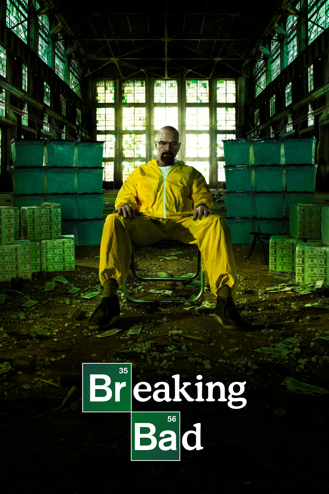

Breaking Bad
TV seriāls 2008.–2013. g. TV-MA 49 min

Skolotājs ar vēža diagnozi pārtop par metamfetamīna ražotāju, lai nodrošinātu ģimenes nākotni.
Vērtējums: 9.5/10
Vairāk informācija šeitAtklājiet labākos un populārākos seriālus, kas šobrīd ir skatāmi.
TV seriāls 2008.–2013. g. TV-MA 49 min
Skolotājs ar vēža diagnozi pārtop par metamfetamīna ražotāju, lai nodrošinātu ģimenes nākotni.
Vērtējums: 9.5/10
Vairāk informācija šeitTV seriāls 2002.–2008. g. TV-MA 59 min

Reālistisks skatījums uz noziedzību, korupciju un sabiedrības sabrukumu Baltimoras pilsētā.
Vērtējums: 9.3/10
Vairāk informācija šeitTV seriāls 2019. g. TV-MA 1h
Drāmas miniseriāls par Černobiļas kodolkatastrofu un tās sekām Padomju Savienībā.
Vērtējums: 9.3/10
Vairāk informācija šeitTV seriāls 2011.–2019. g. TV-MA 1 h

Dižciltīgās ģimenes cīnās par varu Vesterosā, kamēr tuvojas sen aizmirsts ļaunums.
Vērtējums: 9.2/10
Vairāk informācija šeitTV seriāls 2010.–2017. g. TV-14 1 h 28 min
Mūsdienu Londona ir Šerloka Holmsa darbības vieta. Viņš kopā ar Dr. Vatsonu risina noziegumus ar dedukcijas palīdzību.
Vērtējums: 9.1/10
Vairāk informācija šeitTV seriāls 2016.–turpinās TV-14 1 h
Mazā pilsētā pazūd zēns, un draugi atklāj noslēpumus par slepenu eksperimentu un paralēlo pasauli.
Vērtējums: 8.7/10
Vairāk informācija šeitTV seriāls 1999.–2007. g. TV-MA 1 h
Mafijas boss cenšas sabalansēt noziedzību, ģimenes dzīvi un savu garīgo veselību.
Vērtējums: 9.2/10
Vairāk informācija šeitTV seriāls 2016.–2023. g. TV-MA 58 min
Karalienes Elizabetes II dzīve no kāpšanas tronī līdz mūsdienām — politika, ģimene un drāmas.
Vērtējums: 8.6/10
Vairāk informācija šeitTV seriāls 2019.–turpinās TV-14 40 min
Vientuļš mednieks ceļo pa Galaktikas nomalēm pēc Impērijas krišanas.
Vērtējums: 8.7/10
Vairāk informācija šeitTV seriāls 1994.–2004. g. TV-14 22 min
Sešu draugu ikdiena Ņujorkā — draudzība, romantika un dzīves likstas.
Vērtējums: 8.9/10
Vairāk informācija šeitTV seriāls 2019.–turpinās TV-MA 1 h
Grupa parastu cilvēku cenšas atklāt un apkarot korumpētos supervaroņus, kuri izmanto savas spējas ļaunprātīgi.
Vērtējums: 8.6/10
Vairāk informācija šeitTV seriāls 2013.–2022. g. TV-MA 58 min
Šeldonu ģimene, kas vada noziedzīgu bandu, seriālā atklāj viņu cīņu par varu, ietekmi un izdzīvošanu pēc Pirmā pasaules kara, parādot intrigas, sazvērestības un ģimenes lojalitāti.
Vērtējums: 8.7/10
Vairāk informācija šeitTV seriāls 2021.–turpinās TV-MA 40 min
Arcane ir animēts seriāls, kas balstīts uz populāro spēli League of Legends. Stāsts risinās divās pilsētās Piltoverā un pazemē esošajā Zaunā un seko divu māsu likteņiem, kas nonāk konfliktā ar tehnoloģiju un politikas spēkiem.
Vērtējums: 9.0/10
Vairāk informācija šeitTV Seriāls 2006.g.- turpinās TV-MA 1h
Dexter ir psiholoģisks trilleris par Deksu Morganu, forensikas analītiķi, kurš vada dubultdzīvi kā sērijveida slepkava, mērķējot uz citiem noziedzniekiem. Seriāls pēta morāles, taisnīguma un atriebības tēmas.
Vērtējums: 8.6/10
Vairāk informācija šeitTV Seriāls 2015.g.- 2022.g. TV-MA 50 min
Krimināllietu advokāta Džimija Makgila pārbaudījumi un grūtības gados pirms viņa liktenīgās tikšanās ar Volteru Vaitu un Džesiju Pinkmanu.
Vērtējums: 9.0/10
Vairāk informācija šeitTV Seriāls 2018.g.- turpinās TV-MA 45 min

Stāsts par Džozefu Goldbergu, grāmatnīcu menedžeri, kurš kļūst par apsēstu slepkavu, kad viņš iemīlas sievietē, kuru sastop nejauši. Seriāls pēta mīlestības, obsesijas un morāles robežas.
Vērtējums: 7.6/10
Vairāk informācija šeitTV Seriāls 2005.g.- 2013.g. TV-MA 22 min
Stāsts par biroja darbinieku ikdienu Dunder Mifflin papīra uzņēmumā, piedāvājot humoristisku skatījumu uz darba dzīvi un kolēģu attiecībām.
Vērtējums: 9.0/10
Vairāk informācija šeitTV Seriāls 2013.g.- turpinās TV-MA 22 min
Stāsts par ģēniju zinātnieku Riku Sančesu un viņa mazbērnu Mortiju, kuri ceļo pa multiversu, piedzīvojot dīvainus un bieži vien bīstamus notikumus. Seriāls apvieno zinātnisko fantastiku ar melno humoru.
Vērtējums: 9.1/10
Vairāk informācija šeitTV Seriāls 2023.g.- turpinās TV-MA 22 min
Pēc globālas pandēmijas, kas iznīcina civilizāciju, rūdīts izdzīvotājs uzņemas rūpes par 14 gadus vecu meiteni, kura varētu būt pēdējā cerība cilvēces izdzīvošanai.
Vērtējums: 8.6/10
Vairāk informācija šeitTV Seriāls 2022.g.- turpinās TV-MA 60 min

Marks vada biroja darbinieku komandu, kuru atmiņas ir ķirurģiski sadalītas starp darba un privāto dzīvi. Kad ārpus darba parādās noslēpumains kolēģis, sākas ceļojums, lai atklātu patiesību par viņu darbu.
Vērtējums: 8.7/10
Vairāk informācija šeitTV Seriāls 2025.g.–turpinās TV-MA30m
Kad noslēpumains ļaundaris draud atvērt elles vārtus, velnišķīgi skaistais dēmonu mednieks varētu būt pasaules labākā cerība uz izglābšanos.
Vērtējums: 7.4/10
Vairāk informācija šeit